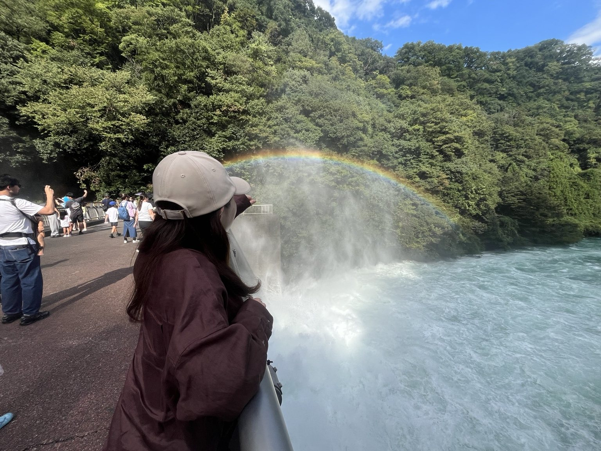
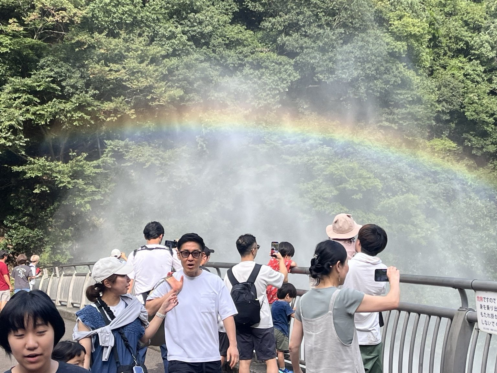
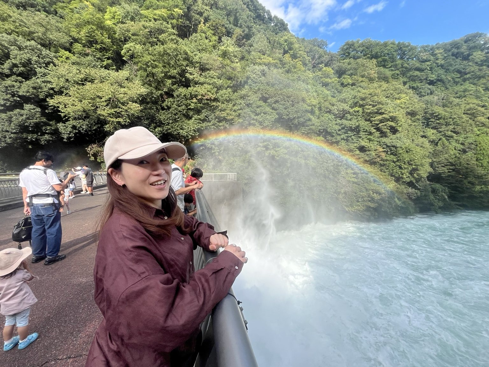
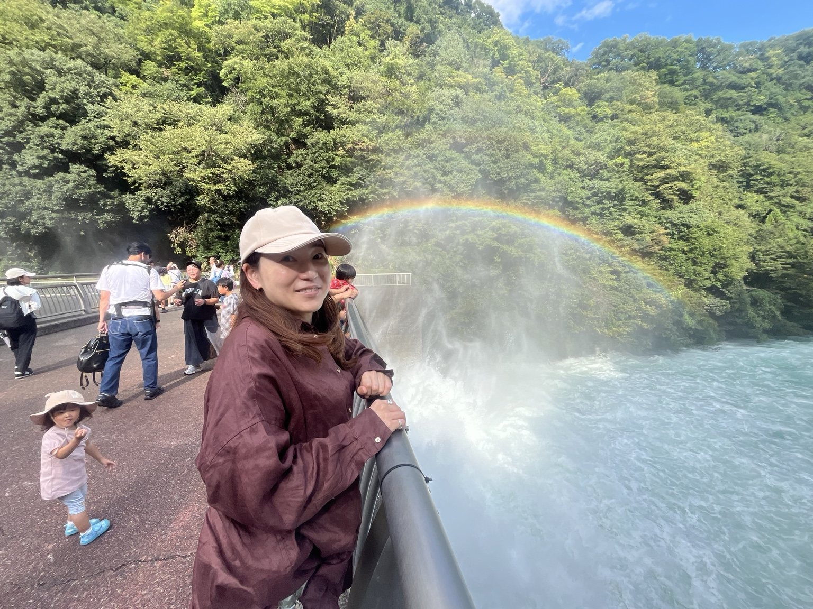
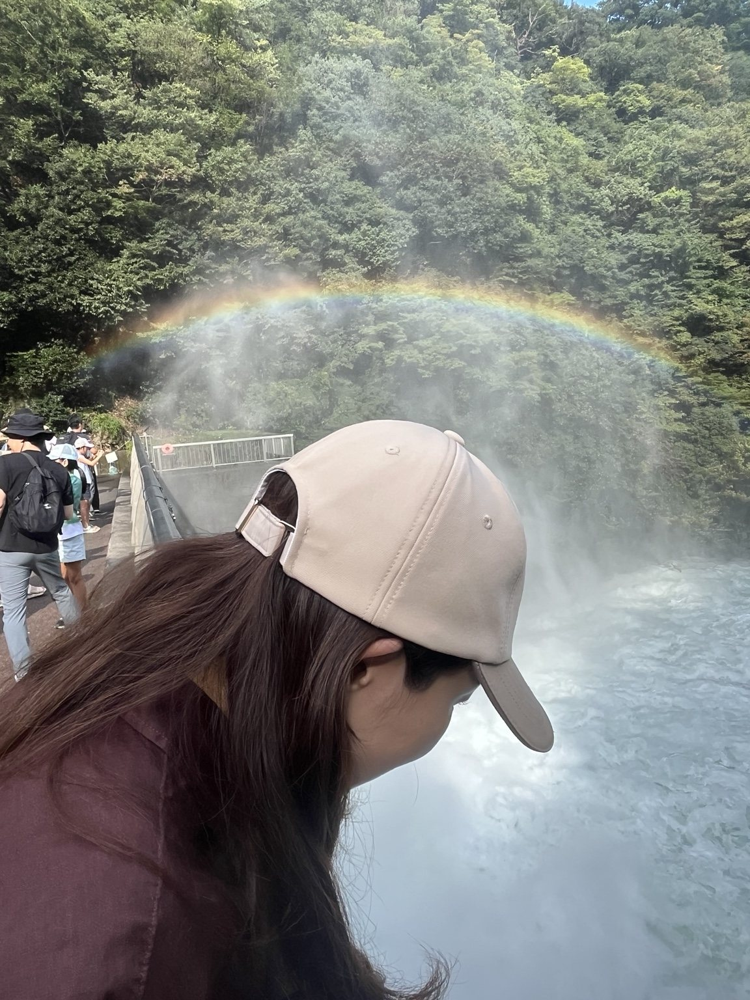
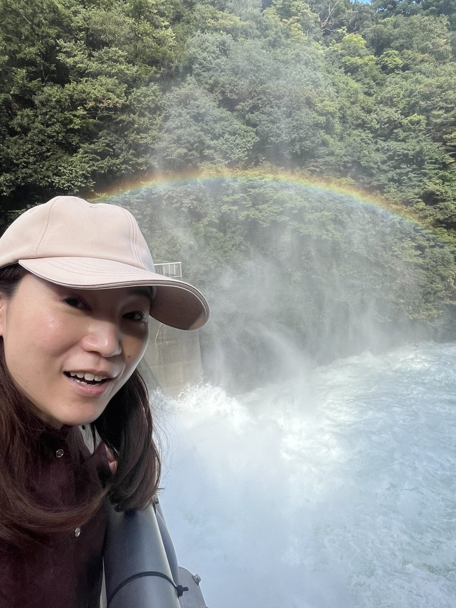

Tuesday, September 22シルバーウィークの
シルバーウィークの
小さな旅
今日は宮ヶ瀬ダムへ行ってきました。山の緑がまぶしくて、空はきれいな青色。大きなダムのそばまで行くと、水の勢いと音にびっくり！
水しぶきがふわっと広がったその向こうに、なんと大きな虹が。森の端から端まで弧を描くようにかかっていて、思わず何枚も写真を撮りました。見る角度によって虹の濃さも違って、ずっと眺めていたくなる景色でした。
ベージュのキャップにえんじ色のシャツで、虹をバックに記念撮影。水の迫力も、虹の美しさも、写真に残せてうれしい一日です。

The rainbow moment水しぶきの向こうに、
水しぶきの向こうに、
七色の虹。
轟音とともに流れ落ちる水。その細かな水滴に太陽の光が当たって、目の前に虹が現れました。こんなに近くで大きな虹を見られるなんて、なんだか特別な気分。
宮ヶ瀬ダムの観光放流は、通常約6分間。写真には、まさにその迫力と虹が一緒に写っています。
Photo album
01 · 虹を背に、今日のお気に入りの一枚。 02 · 虹の下で、にっこり。 03 · 水しぶきがつくる大きな虹。 04 · 水の流れをじっくり眺めて。 
05 · 何枚でも撮りたくなる景色。 
06 · 青空、緑の山、そして虹。 07 · 水しぶきのそばで記念撮影。 08 · 近くで見ると、ますますすごい迫力。 09 · みんなが見上げた、今日の虹。
今日の思い出、9枚。





Lunch in Tsukuiお昼は津久井の
お昼は津久井の
雅亭八百辰へ。
お昼ごはんは、津久井の雅亭八百辰（みやび亭八百辰）でランチ。ダムで自然を満喫した日の、もうひとつの楽しみです。
写真はダム中心なので、お料理の写真はまた今度。何を食べたかも書き足して、今日の思い出を完成させたいな。
お店の地図を見る ↗LUNCH SPOT
みやび亭 八百辰
神奈川県相模原市緑区中野977-1
電話：042-784-1835
※訪問した料理・価格については未記録です。
Memory in motion
あの迫力を、動画でも。
About Miyagase Dam約70m
観光放流の落差 約6分
通常の観光放流時間 2000年
宮ヶ瀬ダム完成
宮ヶ瀬ダムって、こんなところ。
神奈川県の丹沢山地に囲まれた、2000年完成の重力式コンクリートダム。洪水調節や水道用水の確保、発電などを担う大切な施設です。湖の周囲には自然を楽しめる散策エリアもあります。
観光放流の落差
通常の観光放流時間
宮ヶ瀬ダム完成
ダムのそばには「水とエネルギー館」もあり、水道や発電、ダムの役割を楽しく学べます。観光放流の実施日は変わる場合があるため、訪問前に公式案内を確認してください。
参考：国土交通省・観光放流 ／ 神奈川県・宮ヶ瀬ダム ／ 水とエネルギー館
September 22, 2026またひとつ、
またひとつ、
忘れられない景色が増えました。
大きな虹と、迫力満点の放流。シルバーウィークの宮ヶ瀬で出会えた、素敵な一日でした。
— 裕子